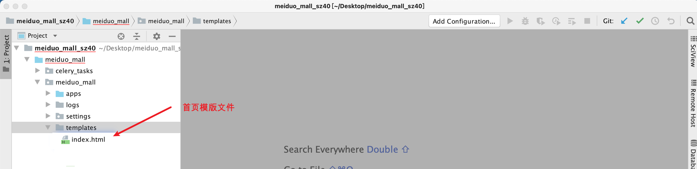

首页广告页面静态化
思考：
- 美多商城的首页访问频繁，而且查询数据量大，其中还有大量的循环处理。
问题：
- 用户访问首页会耗费服务器大量的资源，并且响应数据的效率会大大降低。
解决：
- 页面静态化
1. 页面静态化介绍
1.为什么要做页面静态化?
- 减少数据库查询次数。
- 提升页面响应效率。
2.什么是页面静态化?
- 将动态渲染生成的页面结果保存成html文件，放到静态文件服务器中。
- 用户直接去静态服务器，访问处理好的静态html文件。

3.何时需要页面静态化
- 如果页面用户访问频繁，且查询数据量大，页面结构复杂，查询和渲染需要花时间时，可以选择页面静态化。
- 美多商城的首页和详情页我们会使用页面静态化技术去实现
4. 如何实现页面静态化？(重点)
- 4.1 查询页面要渲染的数据，并封装在上下文字典中
- 4.2 渲染页面数据，并得到页面对应的HTML字符串
- 4.3 将渲染好的HTML字符串保存到静态HTML文件中
5.页面静态化注意点
- 用户相关数据不能静态化：
- 用户名、购物车等不能静态化。
- 动态变化的数据不能静态化：
- 热销排行、新品推荐、分页排序数据等等。
- 不能静态化的数据处理：
- 可以在用户得到页面后，在页面中向后端发送Ajax请求获取相关数据。
- 直接使用模板渲染出来。
- 其他合理的处理方式等等。
2. 首页页面静态化实现
1.首页页面静态化实现步骤
- 查询首页相关数据
- 获取首页模板文件
- 渲染首页html字符串
- 将首页html字符串写入到指定目录，命名'index.html'
2.分析首页商品频道分类数据结构

{
"1":{
"channels":[
{"id":1, "name":"手机", "url":"http://shouji.jd.com/"},
{"id":2, "name":"相机", "url":"http://www.itcast.cn/"}
],
"sub_cats":[
{
"id":38,
"name":"手机通讯",
"sub_cats":[
{"id":115, "name":"手机"},
{"id":116, "name":"游戏手机"}
]
},
{
"id":39,
"name":"手机配件",
"sub_cats":[
{"id":119, "name":"手机壳"},
{"id":120, "name":"贴膜"}
]
}
]
},
"2":{
"channels":[],
"sub_cats":[]
}
}
3、获取首页模版index.html
把首页模版index.html放入templates文件夹中。

3.封装工具函数
在apps/contents/utils.py中封装如下：
from goods.models import GoodsChannel
def get_categories():
categories = {} # # 商品分类频道
# 按照组id排序，再按照sequence排序
channels = GoodsChannel.objects.order_by(
'group_id',
'sequence'
)
# 遍历每一个频道。把频道插入以"组id"为键的键值对中
for channel in channels:
# 当前组不存在的时候(第一次构建)
if channel.group_id not in categories:
# categories[1] = {}
categories[channel.group_id] = {
'channels': [], # 一级分类信息
'sub_cats': [] # 二级分类
}
# 一级分类
cat1 = channel.category
categories[channel.group_id]['channels'].append({
'id': cat1.id,
'name': cat1.name,
'url': channel.url
})
# 二级分类
cat2s = cat1.subs.all()
for cat2 in cat2s:
# cat2：每一个二级分类对象
# 当前二级分类关联的三级分类
cat3s_list = []
cat3s = cat2.subs.all()
for cat3 in cat3s:
# cat3：当前二级分类关联的每一个三级分类对象
cat3s_list.append({
'id': cat3.id,
'name': cat3.name
})
categories[channel.group_id]['sub_cats'].append({
'id': cat2.id,
'name': cat2.name,
'sub_cats': cat3s_list # 三级分类
})
return categories
4.首页页面静态化实现

新建apps/contents/crons.py如下：
def generate_static_index_html():
# 获取商品频道和分类
categories = get_categories()
# 广告内容
contents = {}
content_categories = ContentCategory.objects.all()
for cat in content_categories:
contents[cat.key] = cat.content_set.filter(status=True).order_by('sequence')
# 渲染模板
context = {
'categories': categories,
'contents': contents
}
# 获取首页模板文件
template = loader.get_template('index.html')
# 渲染首页html字符串
html_text = template.render(context)
# 将首页html字符串写入到指定目录，命名'index.html'
file_path = os.path.join(os.path.dirname(os.path.dirname(settings.BASE_DIR)), 'front_end_pc/index.html')
with open(file_path, 'w', encoding='utf-8') as f:
f.write(html_text)
4.首页页面静态化测试效果


测试提示：使用
http://www.meiduo.site:8080/index.html
3. 定时任务crontab静态化首页
重要提示：
- 对于首页的静态化，考虑到页面的数据可能由多名运营人员维护，并且经常变动，所以将其做成定时任务，即定时执行静态化。
- 在Django执行定时任务，可以通过
django-crontab扩展来实现。
1.安装 django-crontab
$ pip install django-crontab -i https://pypi.tuna.tsinghua.edu.cn/simple
2.注册 django-crontab 应用
INSTALLED_APPS = [
'django_crontab', # 定时任务
]
3.设置定时任务
定时时间基本格式 :
* * * * *
分 时 日 月 周 命令
M: 分钟（0-59）。每分钟用 * 或者 */1 表示
H：小时（0-23）。（0表示0点）
D：天（1-31）。
m: 月（1-12）。
d: 一星期内的天（0~6，0为星期天）。
定时任务分为三部分定义：
- 任务时间
- 任务方法
- 任务日志
CRONJOBS = [
# 每1分钟生成一次首页静态文件
('*/1 * * * *', 'apps.contents.crons.generate_static_index_html', '>> ' + os.path.join(BASE_DIR, 'logs/crontab.log'))
]
解决 crontab 中文问题
- 在定时任务中，如果出现非英文字符，会出现字符异常错误
# ubuntu
CRONTAB_COMMAND_PREFIX = 'LANG_ALL=zh_cn.UTF-8'
# mac
CRONTAB_COMMAND_PREFIX = 'LANG=zh_cn.UTF-8'
4.管理定时任务
# 添加定时任务到系统中
$ python manage.py crontab add
# 显示已激活的定时任务
$ python manage.py crontab show
# 移除定时任务
$ python manage.py crontab remove